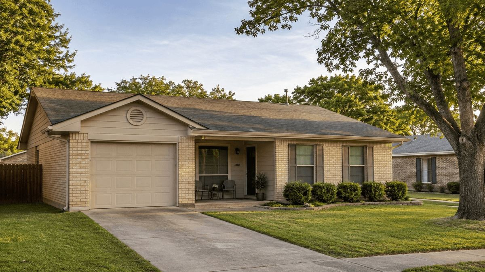

Real estate equity is patient capital. It sits inside your investment property, growing quietly while you collect rent and pay down debt. A cash-out refinance is one of the most direct ways to put that capital back to work, but the decision deserves more than a quick calculation on a napkin. Rates, loan-to-value limits, credit requirements, and your existing financing all factor into whether this strategy makes sense in 2026.
This article walks through how a cash-out refinance works for investment properties, what lenders are requiring right now, how to weigh the trade-offs honestly, and when an alternative strategy might serve you better.
What a Cash-Out Refinance Actually Does
A cash-out refinance replaces your existing mortgage with a larger loan. The difference between the new loan balance and your old one is paid to you in cash at closing. You can use those funds for almost any purpose, though most investors deploy them into additional acquisitions, renovations, or debt payoff.
For example, suppose your rental property is worth $400,000 and your current mortgage balance is $180,000. If a lender allows a 70 percent loan-to-value (LTV) limit, the maximum new loan would be $280,000. After paying off the existing mortgage and closing costs, you might walk away with roughly $85,000 to $95,000 in usable capital.
That capital does not come free. You are borrowing against equity you have already built, and the new loan carries interest, a longer amortization, or both.
What Lenders Require for Investment Property Cash-Out Refinances in 2026
Lending guidelines for investment properties are stricter than for primary residences. Lenders price in the additional risk because rental properties have higher default rates during economic stress. According to Gelt Financial’s 2026 investment property refinance overview, the standard requirements look like this:
- LTV limits: Most lenders cap cash-out refinances on rental properties at 65 to 75 percent of appraised value.
- Credit score: Minimum scores generally fall between 620 and 680, though better pricing requires scores above 720.
- Interest rates: Expect rates to run higher than comparable primary residence loans, often by 0.5 to 1.0 percentage points or more.
- Reserves: Many lenders require six to 12 months of PITI (principal, interest, taxes, and insurance) in reserve after closing.
- Debt-to-income ratio: Conventional programs typically require a DTI at or below 45 percent, though some Non-QM programs handle this differently.
- Seasoning: Some programs require you to have owned the property for at least six to 12 months before allowing a cash-out refinance.
These are baseline figures. Individual lender overlays, property type, and the number of financed properties you already hold can all tighten or loosen these requirements.
When a Cash-Out Refinance Makes Financial Sense
Timing matters considerably with this strategy. As Lofty.ai’s analysis of cash-out refinances for rental properties points out, this approach is most beneficial when your existing interest rate is at or above current market rates. If you locked in a rate several years ago that is already higher than what lenders are offering now, a cash-out refinance can simultaneously lower your rate and release equity.
The math flips when you hold a low-rate first mortgage. Replacing a 3.25 percent loan with a 7 percent loan to access equity is a costly trade. In that scenario, the monthly payment increase may erase the cash flow benefit of whatever you do with the proceeds.
Scenarios Where This Strategy Works Well
- Your existing rate is near or above current market rates, so replacing it does not significantly increase your cost of capital.
- You have substantial equity and plan to use the proceeds to acquire an additional income-producing property.
- You are refinancing out of a hard money loan or short-term private lender note with a high rate and a balloon payment.
- The property’s rental income comfortably covers the new, higher payment with positive cash flow remaining.
- You want to consolidate multiple investment property debts into a single loan with a predictable payment.
Scenarios Where You Should Pause
- Your existing first mortgage carries a rate below 4 percent, and replacing it would significantly increase your monthly obligations.
- The property’s current cash flow is thin, and a higher payment would push it into negative territory.
- You do not have a clear, productive use for the cash proceeds.
- Your credit score or DTI would push you into a higher rate tier, reducing the net benefit.
DSCR Loans as an Alternative Path
For investors who want to access equity without the burden of personal income documentation, DSCR (Debt Service Coverage Ratio) loans have become a strong alternative in 2026. These programs evaluate the property’s rental income relative to its debt obligations rather than the borrower’s personal tax returns or W-2s.
This matters because many experienced investors show modest taxable income after depreciation, deductions, and business expenses. A conventional underwriter looking at that tax return may decline the loan even when the investor is financially strong. A DSCR program looks past that and focuses on whether the property pays for itself.
You can explore investment property financing options, including DSCR programs, to see whether your rental income qualifies under this structure. The qualification criteria differ meaningfully from conventional guidelines, and for the right investor, the difference is significant.
“Let your assets buy your liabilities.”, Robert LeBorne
This principle is the foundation of smart equity deployment. When you pull cash from one investment property and use it to acquire another income-producing asset, the new asset services its own debt. You are not spending equity; you are multiplying it.
How to Calculate Whether the Numbers Work
Before applying, run a straightforward cash flow analysis. The goal is to confirm the investment property still produces positive income after the new payment, and that the proceeds justify the increased cost.
Step-by-Step Analysis
- Determine your current equity. Get a current market value estimate and subtract your existing loan balance.
- Apply the LTV limit. Multiply the appraised value by 0.70 (or the applicable limit) to find the maximum new loan amount.
- Subtract closing costs. Cash-out refinances on investment properties typically carry closing costs between two and five percent of the loan amount. Subtract these from your gross proceeds.
- Calculate the new monthly payment. Use the new loan amount, current rate, and a 30-year term to determine your new PITI.
- Confirm positive cash flow. Subtract the new payment, taxes, insurance, vacancy allowance, and maintenance from gross rental income. If the result is positive, the property is still working for you.
- Project the return on proceeds. Estimate what the cash proceeds will earn when deployed into the next investment. If that return exceeds the cost of the new debt, the strategy is mathematically sound.
The Role of Market Conditions in 2026
Interest rates have stabilized through the second half of 2026 after significant movement in prior years. Institutional capital is returning to residential real estate, particularly in build-to-rent and single-family rental sectors. That increased demand supports property values in many markets, which is favorable for investors looking to refinance.
San Antonio and the broader Texas market have held up well on the affordability side relative to coastal markets. Investors in this region have seen equity growth that, in many cases, makes a cash-out refinance a viable option even at current rates. For a closer look at what is happening locally, the San Antonio real estate investment overview covers current market dynamics in more detail.
One note of caution: stabilized rates are not the same as low rates. Investors who are accustomed to the rate environment of 2020 and 2021 may find current pricing uncomfortable. That discomfort is real, but it should not automatically rule out a cash-out refinance if the underlying strategy is sound.
Protecting a Low First Mortgage Rate
Many investors carry a first mortgage at a rate they would not want to replace under any circumstances. If that describes your situation, a cash-out refinance is probably the wrong tool. The better options in that case include:
- A home equity loan on the investment property, which adds a second lien without touching the first mortgage.
- A DSCR cash-out refinance on a different property in your portfolio that does not carry a protected low rate.
- Cross-collateralization or portfolio lending, where a lender uses multiple properties as combined collateral.
- Private or hard money bridge financing for a short-term acquisition, with a longer-term DSCR refinance planned after stabilization.
The San Antonio home financing guide covers several of these structures in plain language if you want a broader overview of how different loan types compare.
Common Mistakes Investors Make With Cash-Out Refinances
Experience across hundreds of transactions reveals a handful of errors that show up repeatedly. Knowing them in advance can save you a costly mistake.
- Pulling cash without a deployment plan. Accessing equity and letting the proceeds sit in a savings account while paying 7 percent interest on the new loan is a losing trade.
- Ignoring the seasoning requirement. Some investors try to refinance too soon after purchase or renovation and find they do not meet the lender’s minimum ownership period.
- Underestimating closing costs. On a $300,000 loan, three percent in closing costs is $9,000. That reduces your net proceeds and changes the return calculation.
- Overlooking the impact on cash flow. A higher monthly payment can turn a cash-flowing property into a liability if the numbers are not run carefully.
- Assuming the appraisal will support the target value. Appraisals on investment properties can come in lower than expected, particularly in markets with limited comparable sales.
Conclusion: Equity Is a Tool, Not a Trophy
Equity sitting idle inside an investment property is not doing the work it could be doing. A cash-out refinance, executed with clear intent and sound math, can convert that equity into capital that acquires the next property, retires expensive short-term debt, or funds renovations that increase rental income.
The strategy works best when the rate trade-off is manageable, the property maintains positive cash flow after the new payment, and the proceeds are deployed into an asset that earns more than the cost of the debt. When those conditions are met, this approach is a legitimate engine for portfolio growth.
If you are weighing whether a cash-out refinance fits your specific situation, a conversation with an experienced mortgage professional is worth the time. Robert LeBorne has worked with real estate investors for more than 30 years and can help you run the actual numbers on your property before you commit to anything. Reach out at rleborne@nexalending.com to schedule a complimentary investor consultation.
Disclaimer: Loan approval is subject to underwriting guidelines and applicable lending requirements. This article is for educational purposes only and does not constitute a commitment to lend or a guarantee of specific loan terms or financial outcomes.
Frequently Asked Questions
What exactly does a cash-out refinance do for an investment property?
A cash-out refinance replaces your current mortgage with a larger loan, and the difference between the new and old loan balances is paid to you in cash. This cash can be used for various purposes, such as acquiring more properties, funding renovations, or paying off other debts.
What are the typical requirements lenders have for investment property cash-out refinances in 2026?
Lenders generally require a lower loan-to-value (LTV) ratio, typically 65 to 75 percent, for investment properties compared to primary residences. You'll also need a credit score of at least 620 to 680, and expect interest rates to be higher than those for primary homes. Many lenders also require six to 12 months of PITI reserves.
When does a cash-out refinance make the most financial sense for an investment property?
This strategy is most beneficial when your existing mortgage interest rate is at or above current market rates, allowing you to lower your borrowing cost while accessing equity. It also makes sense if you have a clear plan to use the proceeds for a high-return investment, such as acquiring another income-producing property.
What happens if my current mortgage rate is significantly lower than current market rates?
If your existing mortgage has a low rate, like below 4 percent, a cash-out refinance is likely not a good idea. Replacing a low-rate loan with a much higher-rate loan will significantly increase your monthly payments, potentially erasing any cash flow benefits from the funds you access and making the property a financial liability.
What are common mistakes investors make when considering a cash-out refinance on an investment property?
Common errors include accessing equity without a clear plan for deploying the funds, underestimating closing costs which reduce net proceeds, and overlooking the impact of a higher monthly payment on the property's cash flow. Investors also sometimes fail to meet lender seasoning requirements or assume their property appraisal will support the desired loan amount.